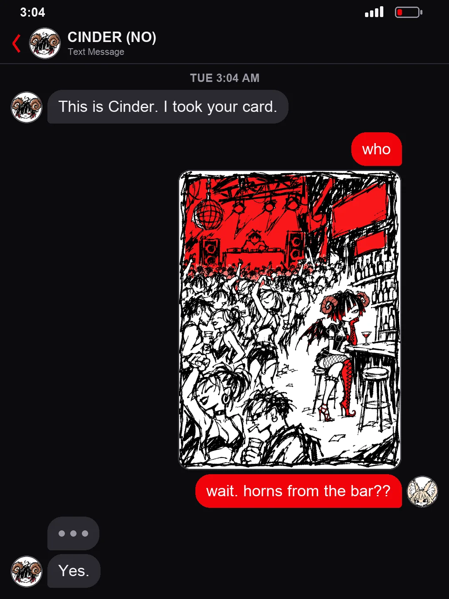
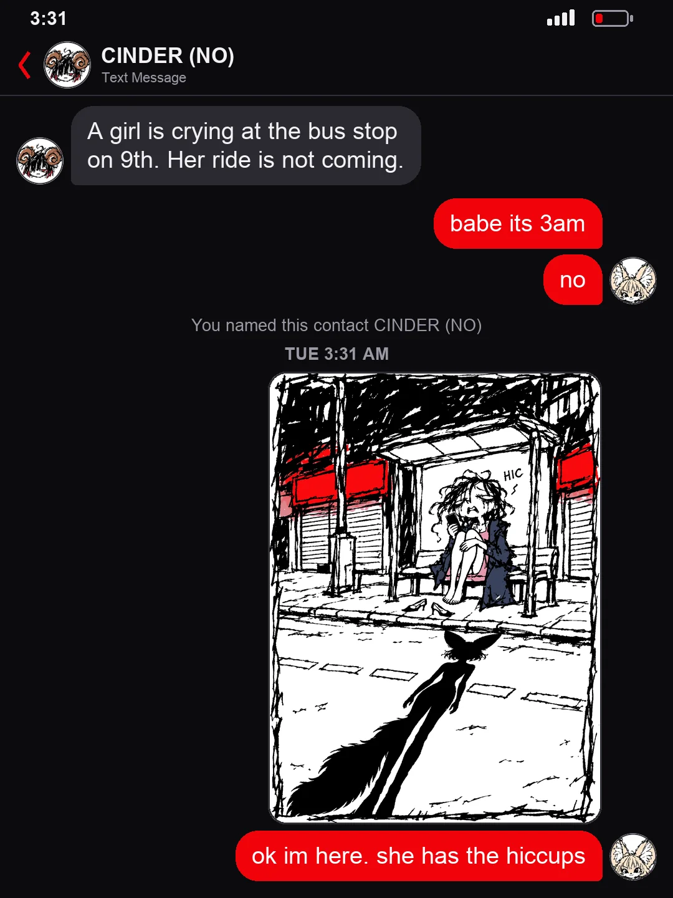
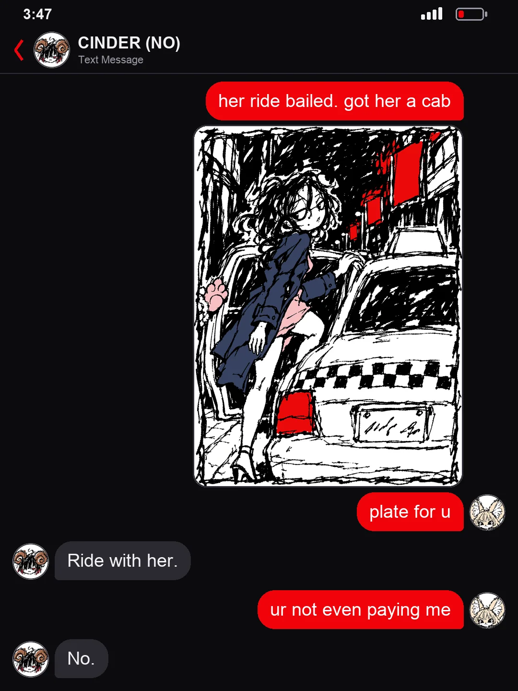
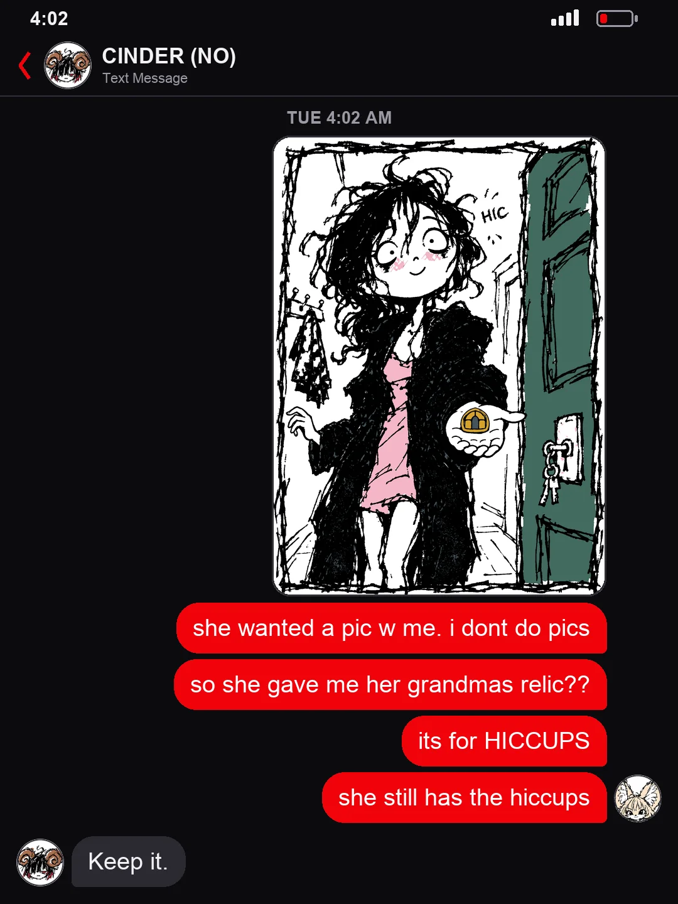
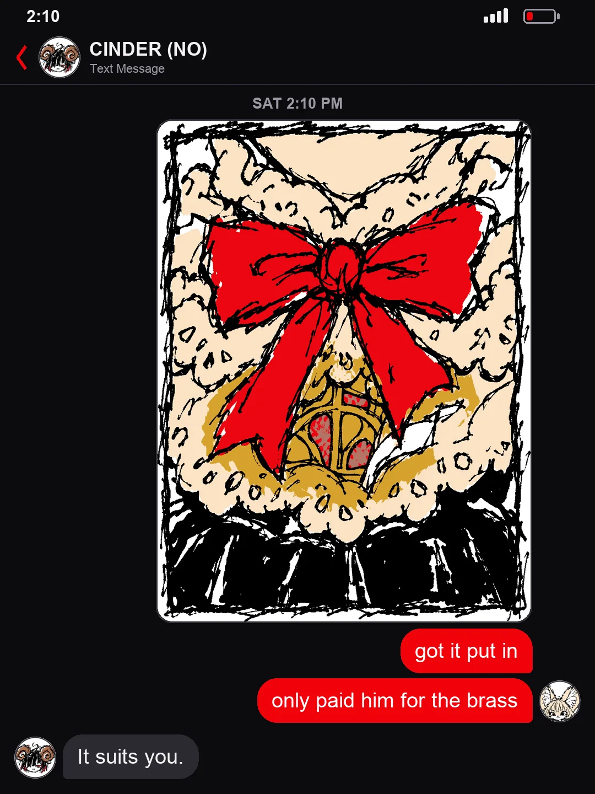
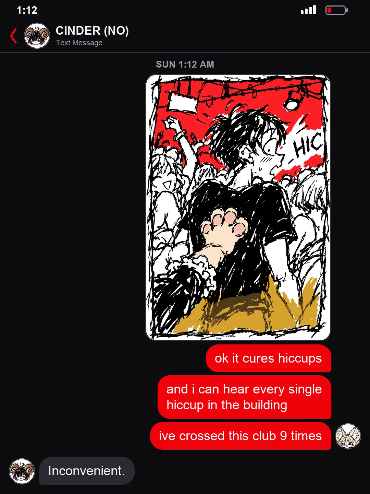
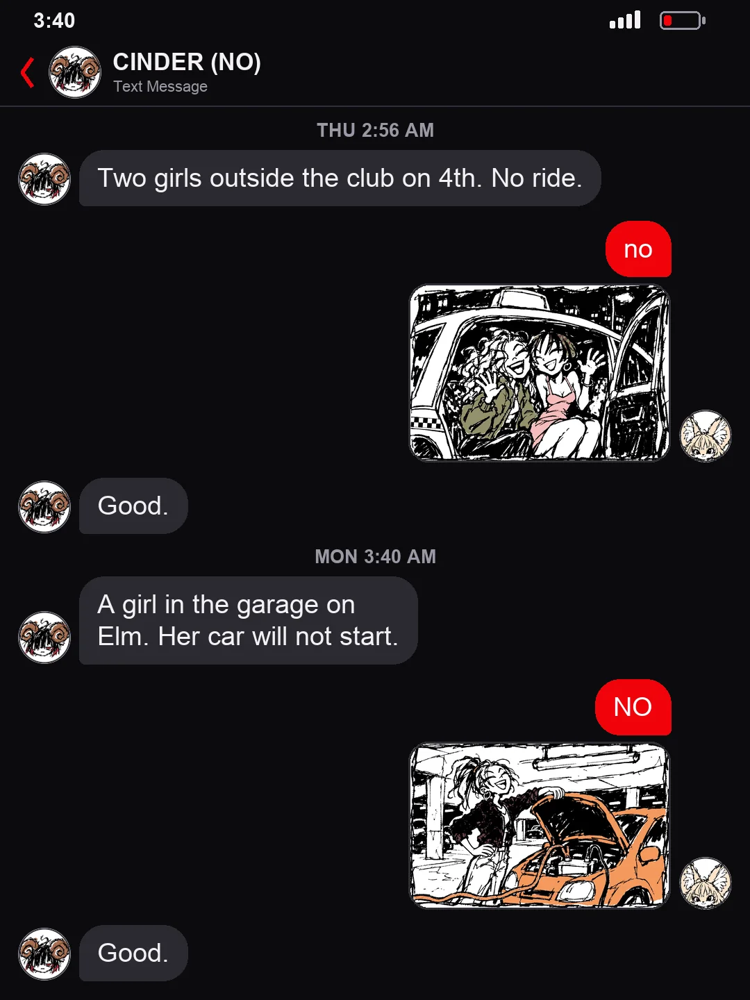
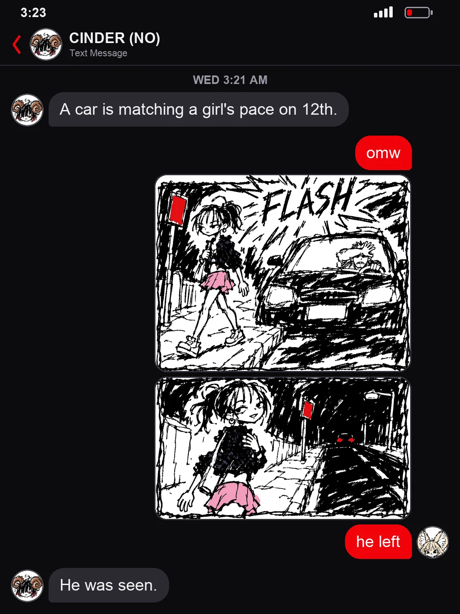
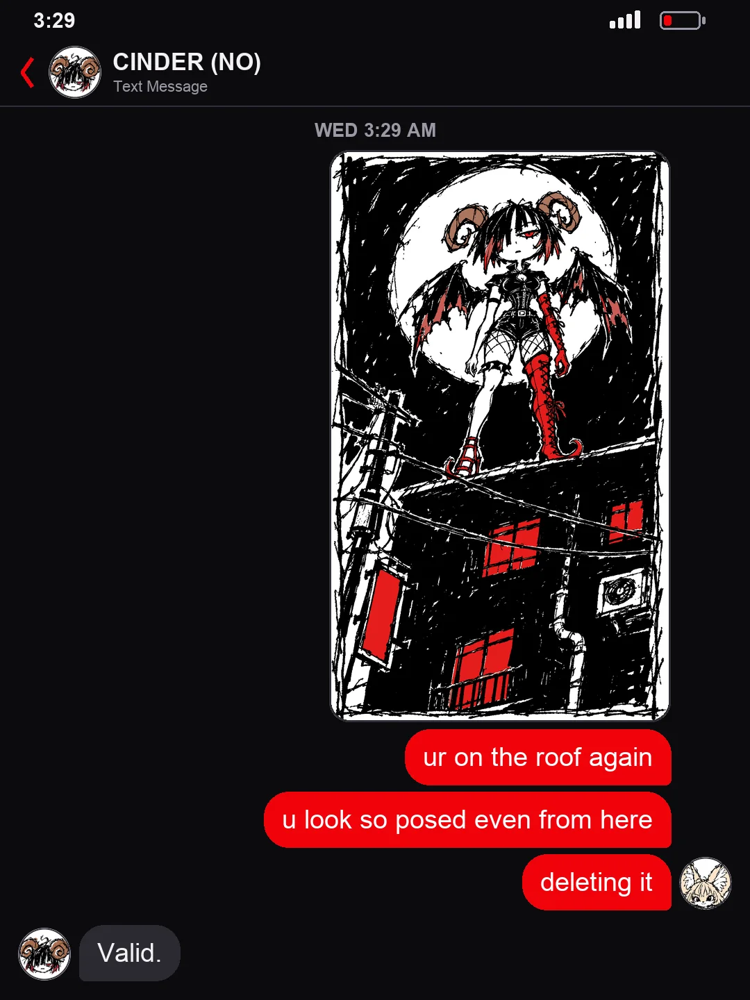
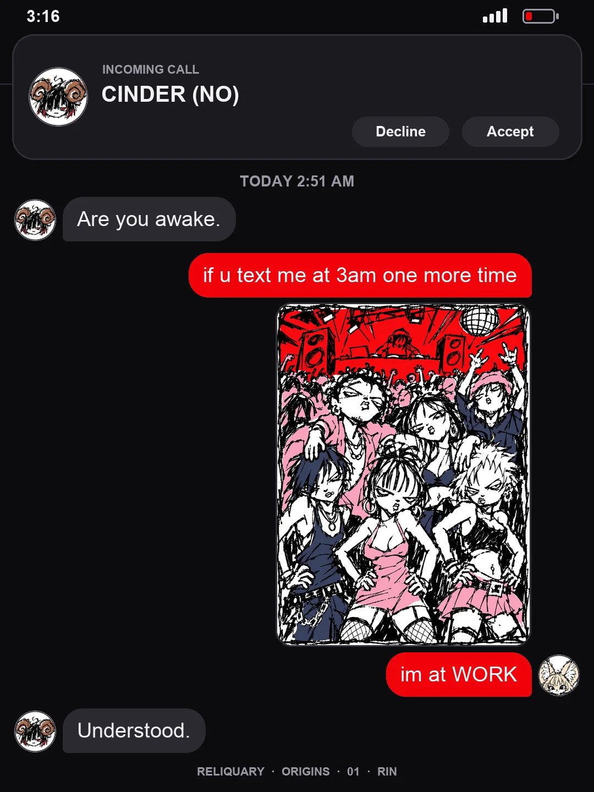

A MANHWA · ORIGINS #1
RIN · CINDER (NO)
she said no every time. she went every time 📸
The cover, 10 screens of her texts, the back. Read it top to bottom.










END OF ORIGINS #1
The texts become the first call. That night is Episode 1.